MySQL扩展知识
函数
MySQL自带了一些内置函数用来实现数据库的高级功能，内置函数大致有以下几类：数学函数、日期时间函数、字符串函数、加密与解密函数、信息函数、聚合函数。
数学函数
| 函数 | 说明 |
|---|---|
| ABS() | 计算绝对值 |
| PI() | 圆周率，默认显示7位小数 |
| POW()或POWER() | 计算x的y次方 |
| SQRT() | 计算非负数的平方根 |
| RAND() | 获取一个[0,1)之间的随机数，可以指定一个整数作为种子 |
| SIN()、COS()、TAN()、COT() | 三角函数 |
| ASIN()、ACOS()、ATAN()或ATAN2() | 反三角函数 |
| CEIL()或CEILING() | 向下取整 |
| FLOOR() | 向上取整 |
| ROUND() | 四舍五入，可指定舍入的位数，默认为0，为负时向小数点前舍入，最大（小）值±30 |
| CONV() | 将N进制的值转换为M进制，进制取值范围为[2,36] |
| SIGN() | 判断有理数的类型，正数为1，负数为-1，0则是0 |
| EXP()、LN() | e（自然常数）的X次方，e为底X的对数 |
| LOG(b,x) | 计算x为底b的对数，省略x时相当于LN() |
| LOG2()、LOG10() | 计算2为底x的对数，10为底x的对数 |
| MOD() | 模运算（取余），适用于小数 |
| FORMAT() | 以千位分隔符的方式显示数字，需指定小数位数（四舍五入处理） |
| HEX() | 返回十进制数字或字符串的16进制表示 |
| TRUNCATE() | 将x截断d位小数，如果d为负则将前面d位整数置0 |
一些示例：
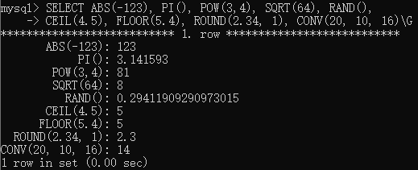
日期时间函数
对于日期与时间函数，默认格式为YYYY-MM-DD hh:mm:ss，与数字进行计算时，返回YYYYMMDDhhmmss格式
| 函数 | 说明 |
|---|---|
| CURDATE()或CURRENT_DATE()或CURRENT_DATE | 返回当前日期 |
| CURTIME()或CURRENT_TIME()或CURRENT_TIME | 返回当前时间 |
| NOW()或CURRENT_TIMESTAMP()或CURRENT_TIMESTAMP 或LOCALTIME()或LOCALTIME 或LOCALTIMESTAMP()或LOCALTIMESTAMP |
返回当前日期和时间，这是常量时间，表示语句开始执行时的时间 |
| UNIX_TIMESTAMP() | 时间戳，表示自1970-01-01 00:00:00 UTC开始的秒数 |
| ADDDATE(expr,days) | 返回指定日期添加days天后的日期 |
| ADDTIME(expr1,expr2) | 返回expr1添加expr2后的结果，expr1为时间或日期时间表达式，expr2为时间表达式 |
| MAKEDATE(year,dayofyear) | 返回给定年份和天数的日期 |
| QUARTER() | 给定日期返回季度值（1到4） |
| SYSDATE() | 与NOW()相似，但表示表达式具体执行时的时间 |
| TIME_TO_SEC() | 将时间值转换为秒数 |
| TO_DAYS() | 将日期转换为天数 |
| TO_SECONDS() | 将日期或日期时间转换为秒数 |
| UTC_DATE或UTC_DATE()、UTC_TIME或UTC_TIME()、 UTC_TIMESTAMP或UTC_TIMESTAMP() |
返回当前UTC日期、时间、日期和时间值 |
| WEEKDAY() | 返回指定日期是星期几（0到6表示星期一到星期日） |
| WEEKOFYEAR() | 返回指定日期是第几周（范围1到53） |
| DAY()或DAYOFMONTH() | 返回指定日期是当前月的第几天 |
| DAYOFWEEK() | 返回指定日期是星期几（1到7表示星期一到星期日） |
| DAYOFYEAR() | 返回指定日期是当年的第几天 |
| FROM_DAYS() | 给定天数返回日期值 |
| LAST_DAY() | 返回指定日期当月最后一天的日期 |
示例：
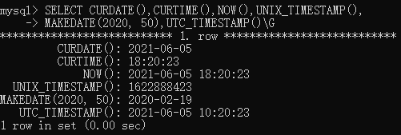
字符串函数
对于字符串函数，如果结果长度大于系统变量max_allowed_packet的值（默认4194304，4MB，最大1GB），则会返回NULL；字符串的第一个位置编号为1；需要长度参数的函数，传入非整数时会舍入到最接近的整数
| 函数 | 说明 |
|---|---|
| ASCII() | 返回字符串最左边字符的ASCII码 |
| BIN() | 返回10进制数的二进制字符串表示形式 |
| OCT() | 返回10进制数的八进制字符串表示形式 |
| UNHEX() | 返回16进制字符串的字符串表示 |
| BIT_LENGTH() | 以位为单位返回字符串的长度 |
| CHAR_LENGTH()或CHARACTER_LENGTH() | 以字符为单位返回字符串的长度 |
| LENGTH()或OCTET_LENGTH() | 以字节为单位返回字符串的长度 |
| CONCAT() | 将一个或多个参数连接为字符串 |
| CONCAT_WS() | 以第一个参数作为分隔符将一个或多个参数连接为字符串 |
| TO_BASE64() | base64编码 |
| FROM_BASE64() | base64解码 |
| INSERT(str,pos,len,newstr) | 插入字符串，将str的pos位置的len长度替换为newstr 如果pos超过范围，则不作处理，如果len超过范围则替换到末尾 |
| REPLACE(str,old,new) | 将字符串str中的old字符替换为new字符，区分大小写 |
| INSTR(str,substr)或LOCATE(substr,str)或POSITION(substr IN str) | 返回substr在sub第一次出现的位置，0表示不存在 |
| LOWER()或LCASE() | 将字符串转换为小写 |
| UPPER()或UCASE() | 将字符串转换为大写 |
| LEFT(str,len) | 返回str从最左边开始的len个字符 |
| RIGHT(str,len) | 返回str从最右边开始的len个字符 |
| LTRIM()，RTRIM()，TRIM() | 删除前导空白字符，删除尾随空白字符，删除两边的空白字符 |
| SUBSTR(str,pos,len)或SUBSTRING(str,pos,len)或MID(str,pos,len) | 返回str从pos位置开始的len个字符串，SUBSTR与SUBSTRING不带len参数时截取到末尾，如果len小于1则返回空字符串 |
| QUOTE() | 返回字符串的引用形式，保留转义符。多用于防止SQL注入 |
| REPEAT(str,count) | 返回str重复count次后的字符串 |
| REVERSE() | 反转字符串 |
| SPACE(N) | 返回N个由空格组成的字符串 |
关于base64，MySQL使用的方案为：
- 转换表中第62位为
+，第63位为/ - 编码输出由4组可打印的字符组成。如果最后一组的长度不足4，则用
=填充 - 每76个字符添加一个换行符
- 解码时忽略换行符、回车符、制表符和空格
字符串函数示例：
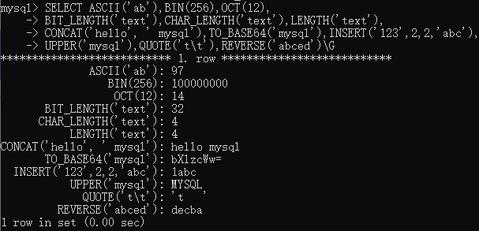
加密与解密函数
| 函数 | 说明 |
|---|---|
| AES_DECRYPT()、AES_ENCRYPT() | AES解密、加密 |
| MD5() | 计算MD5校验和 |
| RANDOM_BYTES() | 指定字节长度通过SSL库的随机数生成器生成随机的二进制字符串，长度范围为1到1024 |
| SHA1()或SHA() | 计算的SHA-1的160位校验和 |
| SHA2(str, length) | 指定结果长度计算字符串的SHA-2哈希值，长度值必须为224、256、384、512或0（相当于256）之一 |
示例：
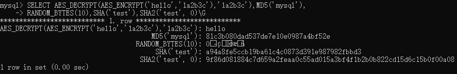
信息函数
| 函数 | 说明 |
|---|---|
| BENCHMARK(count,expr) | 重复执行一个表达式，用于测试标量表达式的性能 |
| CHARSET() | 返回字符串的字符集 |
| COLLATION() | 返回字符串的排序规则 |
| COERCIBILITY() | 返回字符串的排序规则可压缩性值，值的范围0到5表示强度由高到低，用于确定在多个操作数时该使用谁的排序规则 |
| CONNECTION_ID() | 返回当前客户端链接的（线程）ID，这是唯一值 |
| CURRENT_USER()或CURRENT_USER | 当前经过身份验证的用户名和主机名 |
| DATABASE()或SCHEMA() | 返回当前（默认）使用的数据库名称 |
| FOUND_ROWS() | 在执行带有LIMIT子句的SELECT语句后使用，返回如果不使用LIMIT子句时查询到的总行数 |
| LAST_INSERT_ID() | 上次插入数据时，具有自动增量属性的列的值 |
| ROW_COUNT() | 受到更新影响的行数 |
| USER()或SESSION_USER()或SYSTEM_USER() | 客户端提供的用户名和主机名，与CURRENT_USER不一定相同 |
| VERSION() | 当前MySQL服务器的版本号 |
示例：
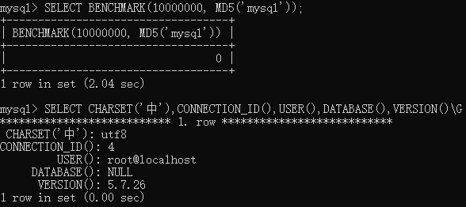
聚合函数
聚合函数是对值的结果集进行操作，通常与GROUP BY子句一起使用，用于将值按条件分组到子集中。
| 函数 | 说明 |
|---|---|
| AVG() | 计算表达式（列）的平均值 |
| BIT_AND()、BIT_OR()、BIT_XOR() | 返回表达式（列）中所有值的按位与、或、异或。按64位精度计算 |
| COUNT() | 返回SELECT语句查询到行数 |
| MAX()、MIN() | 计算表达式（列）的最大值、最小值 |
| SUM() | 对表达式（列）求和 |
| JSON_ARRAYAGG()、JSON_OBJECTAGG() | 将结果集作为单个JSON数组、对象返回（需MySQL版本大于5.7.22） |
示例数据表与数据如下
1 | CREATE TABLE IF NOT EXISTS `number` ( |
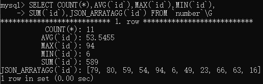
关于COUNT(*)
COUNT(*)返回查询到的所有行数，并且忽略NULL值对于InnoDB存储引擎，它不保留表中行的内部计数，因为并发事务可能同时检索到不同数量的行，所以
SELECT COUNT(*)只对当前事务可见的行进行计数。并且InnoDB以相同方式处理SELECT COUNT(*)和SELECT COUNT(1)操作，两者没有性能差异。对于MyISAM存储引擎，
COUNT(*)是经过优化的，可以在没有WHERE子句的SELECT语句中快速检索一个表中的列；而COUNT(1)仅在表中第一列的属性为非空时与COUNT(*)相同
其它函数
除上述函数外还有类型转换函数、压缩与解压函数、ip地址函数、全文搜索函数、XML函数、JSON函数、地理位置分析函数等等。此处列举部分
| 函数 | 说明 |
|---|---|
| CAST(expr AS type)或CONVERT(expr,type) | 强制类型转换 |
| CONVERT(expr USING charset) | 将数据以指定字符集作转换 |
| COMPRESS() | 压缩字符串 |
| UNCOMPRESS() | 解压字符串，传入非压缩字符串时将会返回NULL |
| UNCOMPRESSED_LENGTH() | 返回压缩字符串在被压缩之前的长度 |
| VALIDATE_PASSWORD_STRENGTH() | 验证密码明文的强度，返回值从0到100表示由弱到强（需插件支持，否则始终为0） |
| DEFAULT() | 返回列的默认值，没有时会返回错误 |
| INET_ATON()、INET6_ATON() | 返回IPv4、IPv6地址的10进制数值 |
| INET_NTOA()、INET6_NTOA() | 将10进制数值转换为IPv4、IPv6地址 |
| IS_IPV4()、IS_IPV6() | 判断是否为IPv4、IPv6地址格式 |
| SLEEP() | 休眠(暂停)指定的秒数 |
| UUID() | 返回一个UUID字符串 |
| UUID_SHORT() | 返回一个无符号64位的UUID整数 |
示例：
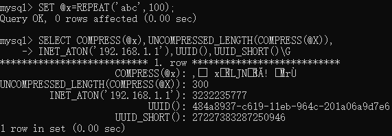
索引
索引是用于在表中快速查找具有特定列值的行记录的一种数据结构。如果不使用索引，MySQL则需要从第一行开始逐渐扫描到整个表以找到符合条件的记录，表越大越耗时。在表中设置索引后，MySQL可以快速定位到相关位置，而不必遍历所有数据。相当于字典中的按拼音、笔画检索
实际上，索引也是一种表，它将主键或索引字段以及指向每个记录的指针保存到另外的表中。用户无需关心索引，它们只用来加快查询速度。使用了索引的表在插入和更新操作上会花费更多的时间，但查询会非常快。因为在插入或更新时，数据库也需要插入或更新相应的索引数据
索引的类型
索引按用途可以分为以下类型：
- 普通索引（index）：基本索引，没有任何限制（可以重复，允许空值）
- 主键（primary key）索引：即创建主键时隐含的索引，是表的唯一标识，不允许重复，不允许空值，每个表只能有一个主键索引。作为最常见的索引，通常定义为自增属性的整数类型。InnoDB要求每个表都有一个这样的索引。不要使用任何与业务相关的字段作为主键
- 唯一（unique）索引：顾名思义，值唯一的索引，不允许重复但可以为空值
- 全文（fulltext）索引：全文索引用于全文搜索，允许重复和空值，只能在CHAR、VARCHAR或TEXT类型的列上创建，且只有InnoDB和MyISAM存储引擎支持
以及用于空间数据类型的空间（spatial）索引。额外的，ARCHIVE引擎不支持空间索引
按存储方式（算法）可以分为：B树索引、哈希索引、R树索引（用于空间数据类型）、T树
MySQL的大多数索引（主键、唯一、全文和普通索引）使用B树结构存储。InnoDB中全文索引使用倒排列表
内存存储引擎默认为哈希索引，同时支持B树索引
NDB存储引擎中B树被实现为T树
关于InnoDB无主键时的运行原理，引申阅读：InnoDB中的聚簇索引和二级索引以及MySQL手册14.6.2.1 Clustered and Secondary Indexes
多列索引
也叫复合索引，即除了对单列字段定义索引外，还可以将多个列组合创建一个多列索引，InnoDB引擎最多允许16个列，只有查询条件中使用了这些列中第一个列时，多列索引才会被使用。多列索引可以被视为排序数组
MySQL可以对多列索引中包含的所有列的查询进行索引，或者只索引第一列、前两列或者前三列，但不能对第二列或之后的列查询使用索引，所以多列索引第一列的选择很重要
使用索引
创建索引
有三种方式创建索引，一是在创建表时指定索引，例如：
1 | CREATE TABLE `article` ( |
索引需要命名，在MySQL中，主键的名称是
PRIMARY。对于其他索引，如果不指定名称，则会为索引指定与索引中第一列相同的名称，并使用带序号的后缀（_2, _3, _4, …）使其唯一对于字符串类型的索引，可以指定仅使用列值前面部分长度的字节作为索引：
列名(长度)。对于TEXT和BLOB类型则必须指定长度。为索引限制列的长度可以使索引文件更小，这可以节省大量的磁盘空间，还可以加快插入操作的速度。全文索引不支持列长度限制，因为索引总是在整个列的内容上进行操作
二是使用CREATE INDEX创建索引，但是不能创建主键索引，不加修饰时为普通索引
1 | CREATE [UNIQUE | FULLTEXT | SPATIAL] INDEX 索引名 ON 表名 (列) [注释] |
CREATE INDEX等同于ALTER TABLE中添加索引，这便是第三种方式
1 | ALTER TABLE 表名 ADD 索引类型 (列) [注释] |
索引类型中KEY与INDEX是同义词，但主键只能用PRIMARY KEY，唯一索引和全文索引可省略KEY或INDEX
删除与查询索引
使用DROP INDEX删除索引，等同于ALTER TABLE中删除索引
1 | DROP INDEX 索引名 ON 表名 |
使用DROP INDEX删除主键，则索引名为PRIMARY且必须加反引号，如果主键含有自增属性，则无法直接删除
1 | ALTER TABLE 表名 DROP [INDEX | KEY] 索引名 |
也可以重命名索引名
1 | ALTER TABLE 表名 RENAME INDEX 旧索引名 TO 新索引名 |
MySQL中并没有提供直接修改索引其它属性的语句，变通的方法是删除原来的索引再添加
要查询索引信息，可以使用SHOW INDEX语句，其中FROM 表名 FROM 库名与FROM 库名.表名是等价的
1 | SHOW {INDEX | INDEXES | KEYS} {FROM | IN} 表名或库名 [WHERE 条件] |
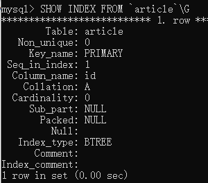
其中一些属性释义：
- Non_unique：如果该索引不能包含重复项，则为0，否则为1
- Seq_in_index：索引中列的序号，从1开始
- Collation：列在索引中的排序方式。A表示升序，NULL表示未排序
- Cardinality：对索引中唯一值的数量的估计值。该值是基于存储为整数的统计信息来计算的，因此即使对于小的表也不一定精确。此数越大，MySQL在执行连接时使用索引的可能性就越高
- Sub_part：索引的前缀。如果列仅部分被索引，则为索引的字符长度；如果整列被索引，则为NULL
- Packed：指示关键字的压缩方式，若没有则为NULL
- Null：如果索引列是否包含NULL值，有则为YES；无则为空字符串
- Index_type：索引使用的存储算法类型，BTREE、FULLTEXT、HASH或RTREE
事务
事务（transaction）指的是在数据库管理系统中执行过程的一个逻辑单位，由一组有限的数据库操作序列构成。具体来说就是将多个增删改查语句作为一个可提交（commit）或回滚（rollback）的单个工作单元来执行，其只会产生两种结果：要么事务提交后所有操作都成功执行，要么事务回滚所有操作都不会执行
ACID四大特性
在操作数据库写入或更新数据的过程中，为保证事务是正确可靠的，必须具备四个特性：
- 原子性（Atomicity）：事务作为一个整体，被执行时其中对数据库的操作要么全部被执行，要么都不执行
- 一致性（Consistency）：在事务开始前和事务结束后，数据库的整体数据是完整的。
- 隔离性（Isolation）：多个事务并发执行时，一个事务的执行不应影响其他事务的执行
- 持久性（Durability）：成功执行的事务对数据库的修改应该被持久化存储，即使系统断电也不会丢失
事务语句
MySQL通过SET autocommit、START TRANSACTION、COMMIT和ROLLBACK等语句来支持本地事务（区别于分布式）。默认情况下，MySQL的自动提交模式处于开启状态，即每一条语句都是原子的，不能使用回滚来撤消，但是如果语句的执行产生错误，则会回滚该语句。
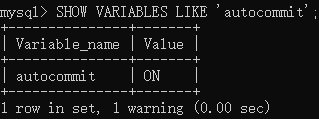
START TRANSACTION或BEGIN开启一个新的事务，并且隐式禁用自动提交模式（提交或回滚后恢复）SET autocommit=0或1显式禁用或启用当前会话的自动提交模式。autocommit是会话变量，修改仅保留于会话中COMMIT提交当前事务，使其更改永久化ROLLBACK回滚当前事务，取消其所有更改SET TRANSACTION设定事务属性，如隔离级别（ISOLATION LEVEL）、访问模式
隐式提交
在MySQL中，一些语句（及其任何同义词）如果在事务中执行，那么在执行前或执行后都会隐式地提交并结束当前会话中活动的任何事务，如定义或修改数据库对象的DDL语句，事务控制和锁定语句，数据加载语句，数据库管理语句，复制语句
同时因为隐式提交，所以存在这些语句的事务在执行后也无法回滚。在设计事务时不应包含此类语句
访问模式
访问模式决定在事务中对数据的操作是可读写（READ WRITE）还是只读（READ ONLY）
事务属性范围
可以在SET后跟GLOBAL或SESSION关键字来为全局或当前会话设置事务属性，根据范围的不同会产生不同的效果：
- 全局：适用于所有后续会话；当前会话不受影响
- 会话：适用于当前会话中所有后续事务；可以在事务中设置但不影响当前事务
- 无关键字：仅适用于当前会话的下一个事务；事务中不允许使用（无关键字的设置）
数据一致性问题
在一个以上的事务并发执行时，读取数据可能会出现三种问题：脏读（Dirty Read）、不可重复读（Non Repeatable Read）和幻读（Phantom Read）
脏读
脏读即一个事务会读到另一个事务未提交的（脏）数据
| 时刻 | 事务1 | 事务2 |
|---|---|---|
| 1 | 事务开始 | 事务开始 |
| 2 | 查询数据 | |
| 3 | 更新数据 | |
| 4 | 查询数据（脏读） | |
| 5 | 回滚 |
如上所示，在事务2的时刻4时，读到了事务1更新后但未提交的数据，在事务1回滚后事务2读到的数据就是脏数据
不可重复读
区别于脏读，一个事务中连续两次读取的数据内容不一致
| 时刻 | 事务1 | 事务2 |
|---|---|---|
| 1 | 事务开始 | 事务开始 |
| 2 | 查询数据 | |
| 3 | 更新数据 | |
| 4 | 提交 | |
| 5 | 查询数据（不可重复读） |
在事务2读取到事务1更新前的数据但事务1没有回滚而是提交了，之后事务2再次读取到不同的数据，此时的现象便是不可重复读
幻读
幻读与不可重复读相似，区别在于数量不一致
| 时刻 | 事务1 | 事务2 |
|---|---|---|
| 1 | 事务开始 | 事务开始 |
| 2 | 查询数据 | |
| 3 | 插入/删除数据 | |
| 4 | 提交 | |
| 5 | 查询数据（幻读） |
如果事务2第一次查询数据时有x条数据，事务2插入或者删除n条数据并提交了，事务2再次查询发现有x±n条数据，如幻影一般，便是幻读
隔离级别
SQL标准（ISO/IEC 9075）为解决上述一致性问题定义了下列4种事务隔离级别，分别对应了是否存在数据一致性的问题：
| 隔离级别 | 脏读 | 不可重复读 | 幻读 |
|---|---|---|---|
| 读未提交（Read Uncommitted） | 有 | 有 | 有 |
| 读已提交（Read Committed） | 无 | 有 | 有 |
| 可重复读（Repeatable Read） | 无 | 无 | 有 |
| 可序列化（Serializable） | 无 | 无 | 无 |
从上到下隔离级别由低到高，隔离级别越高，隔离性也就越高，同时性能影响越大，可支持的并发也就越低
- 读未提交是最低的隔离级别，在同一事务中可以读取其它事务未提交的数据，查询语句会以非锁定的方式执行，存在所有问题
- 读已提交只允许同一事务读取其它事务已经提交的数据，可以解决脏读但存在不可重复读的问题
- 可重复读会对同一事务的第一次读取建立快照，以保证同一事务中多个查询的一致性，解决了不可重复读的问题
- 可序列化作为最高的隔离级别，强制要求所有事务按次序执行，解决了问题，但是并发性能很低，所以很少使用
MySQL的InnoDB引擎默认隔离级别是
REPEATABLE READ，默认访问模式为可读写
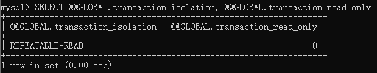
可重复读依旧存在幻读的问题，可序列化性能又较低。为了解决幻读，InnoDB使用了各种各样的锁机制，此处就不再详解了，参考MySQL手册14.7.4幻行
账户与权限系统
MySQL的账户系统可以使客户端用户连接到服务器并访问服务器管理的数据，权限系统则是对从给定主机连接的用户进行身份验证，并将该用户与数据库上的操作（如增删改查等）权限进行控制。权限系统确保所有用户只能执行被允许的操作。
权限系统的不足之处：
- 不能明确的拒绝指定用户的访问（可以锁定）
- 不能指定一个用户有创建或删除数据库中表的权限，但却没有创建或删除数据库本身的权限
- 用户密码适用于整个账户。不能将密码与特定的对象（如数据库、表或存储过程）相关联
MySQL中与用户权限有关的表都在数据库mysql中，共有6个：
user：用户帐户、全局权限和其他非权限字段db：数据库级别的权限。适用于库及库中的所有对象tables_priv：表级别的权限。其中授予的权限适用于表及其所有列columns_priv:：列级别的权限。仅适用于特定列procs_priv：存储过程和函数权限proxies_priv：代理用户权限。表示哪些用户可以作为其他用户的代理，以及用户是否可以将代理权限授予其他用户
账户系统
账户身份由用户名和连接的主机名组成，在识别时会同时考虑主机名和用户名，因为同一个用户名可以在不同的主机上登录，并且可以授予相同用户名在不同主机上不同的权限。作为MySQL自身的账户系统，与操作系统的用户无关。
账户身份语法为'用户名'@'主机名'，@和主机名可以忽略，此时相当于'用户名'@'%'。用户名和主机名作为标识符或字符串使用时需要加上反引号、单引号或双引号（除了@符号）。如果用户名和主机名在未加引号前是合法的标识符，则无需引号。如果用户名中有特殊字符（如空格或-），或者主机名包含特殊字符或通配符（如.或%），则必须使用引号。
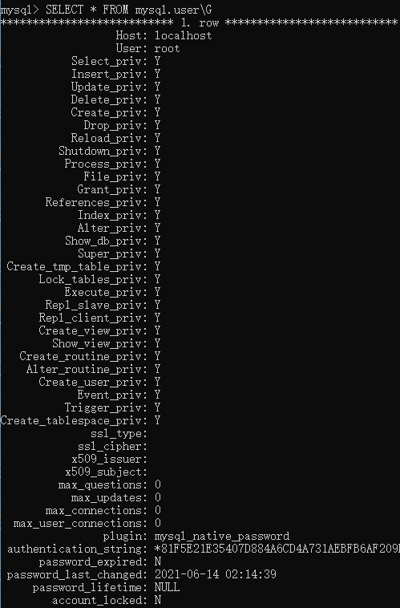
user表中中user和host即为用户名和主机名；带priv后缀的表示Privilege，即权限信息；max前缀的表示资源控制；其它的为访问控制
用户名最长32个字符，主机名最长60个字符，密码使用了特定的算法进行加密，默认情况下用户名和密码仅支持ASCII字符。在访问控制中进行比较时，用户名区分大小写，而主机名不区分。主机名部分可以使用多种形式：
- 可以是域名或IP地址（IPv4或IPv6）。
localhost表示本地主机，127.0.0.1表示IPv4环回接口，::1表示IPv6环回接口 - 允许使用通配符%和_匹配域名或IP地址，与模式匹配的LIKE含义相同。
但IP通配符只匹配IP地址，不匹配域名，并且不支持在用户名中使用通配符 - IPv4地址可以使用掩码表示，如198.168.100.0/255.255.255.0
使用SHOW CREATE USER语句查看当前账户创建语句
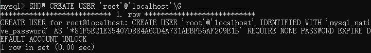
预留账户
在MySQL初始化后，会生成三个预留账户
- ‘root’@‘localhost’：用于管理使用，具有所有权限，可以执行任何操作
- ‘mysql.sys’@‘localhost’：用于sys模式对象的定义器。此帐户可避免重命名或删除root帐户时出现问题。此帐户默认被锁定，无法用于客户端登录
- ‘mysql.session’@‘localhost’：由插件内部访问服务器使用。此帐户默认被锁定，无法用于客户端登录
添加与删除账户
使用CREATE USER语句创建账户
1 | CREATE USER [IF NOT EXISTS] 账户名 [IDENTIFIED BY 密码] [WITH 资源选项] [密码选项 | 锁定选项] |
创建后的账户没有权限，如果省略主机名则为%，密码使用明文即可。密码选项与锁定选项如下
PASSWORD EXPIRE：将密码标记为已过期PASSWORD EXPIRE DEFAULT：将密码标记为系统变量default_password_lifetime值的天数后过期，默认为0PASSWORD EXPIRE NEVER：将密码标记为永不过期PASSWORD EXPIRE INTERVAL N DAY：将密码标记为N天后过期ACCOUNT LOCK、ACCOUNT UNLOCK：标记账户为锁定状态或非锁定状态
使用DROP USER语句删除账户
1 | DROP USER [IF EXISTS] 账户名 |
该语句可以删除一个或多个账户（包括其所有权限）；使用IF EXISTS来避免删除不存在的账户而报错；DROP USER不会自动删除或使被删除用户创建的数据库及其中的对象无效
删除账户的操作被设计为不会自动关闭任何开启的用户会话，如果已登录的用户被删除，则在该用户关闭会话前删除不会生效
修改账户信息
修改账户信息（包括密码）可以使用ALTER USER语句，语法与创建账户基本一致。第二种语法用于修改当前账户的密码
1 | ALTER USER [IF EXISTS] 账户名 [IDENTIFIED BY 密码] [WITH 资源选项] [密码选项 | 锁定选项] |
也可以使用SET PASSWORD语句来修改密码，不使用FOR时修改当前用户密码，密码使用明文即可
1 | SET PASSWORD [FOR 账户名] = 新密码 |
要修改账户名，需要使用RENAME USER语句，重命名操作不会影响原有账户的所有权限
1 | RENAME USER 旧账户名 TO 新账户名 |
权限管理
权限分为管理员权限和数据库权限
- 管理员权限允许用户管理MySQL服务器，这些权限是全局的，并不特定于数据库
- 数据库权限应用于数据库及其内的所有对象。可以为特定的数据库授予，也可以全局授予
可以分别为数据库中的特定对象或者特定类型的所有对象（如表、索引、视图和存储过程）全局授予权限。如果在连接时当前用户的权限被（自己或其他人）更改，则这些更改不一定对之后的语句生效
不建议使用增删改语句直接操作权限表，由于这些修改而导致格式错误的数据会被服务器忽略，并且在手动重新加载权限表或重启MySQL之前，这些更改不会生效。MySQL 5.7.18之后，对于任何修改权限表的操作，服务器都会检查该表是否符合预期的格式，否则会报错
SHOW GRANTS以GRANT语句的形式显示分配给用户的权限
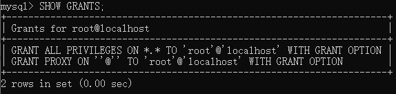
分配权限
GRANT语句向用户授予权限
1 | GRANT 权限类型 [(列名)] ON 权限级别 TO 账户名 [WITH {GRANT OPTION | 资源选项}] |
权限类型通常使用ALL表示PRIVILEGES，即所有权限，但不包括GRANT OPTION和PROXY权限（分配权限的权限与代理用户的权限），USAGE表示无任何权限。可后跟括号将列名括起来表示列级权限，多个列之间使用逗号分割。权限级别描述符有：
*.*全局权限数据库名.*指定数据库级权限，仅使用*时为当前默认数据库数据库名.表名指定表级权限，如果仅使用表名则表示默认数据库中的表
授予所有权限：
1 | GRANT ALL ON *.* TO 账户名 WITH GRANT OPTION |
不增加WITH GRANT OPTION时，权限仅次于root
撤销权限
REVOKE语句用于系统管理员撤销其它帐户的权限
1 | REVOKE 权限类型 [(列名)] ON 权限级别 FROM 账户名 |
权限类型与级别同GRANT语句中描述的一样。要撤销其权限的用户帐户必须存在，但在撤销权限前不需要先授予。使用第二种语法撤销所有权限，但不会删除账户
- 全局权限的更改仅在客户端下次会话连接时生效，更改不会应用于所有当前连接的用户
- 数据库级权限的更改在切换默认数据库之后生效
- 表和列权限的更改将在之后发出的查询操作生效
当数据库或表被删除时，相应的权限不会被自动撤销
数据库的备份与恢复
MySQL作为保存数据的系统，为了在诸如系统宕机、硬件故障、用户误操作时不至于丢失数据，或升级MySQL时转移数据，其备份与恢复功能都是十分重要的。
以下所有操作均需登录数据库
备份数据
同客户端程序mysqld一样，MySQL提供了一个mysqldump程序用于逻辑备份，其主要生成一组SQL语句来转储数据库，此程序还可以生成CSV、其他分隔符格式或XML格式的文本。mysqldump程序的命令格式如下，每行表示一种语法
1 | mysqldump [选项] 数据库名 [表名] [> sql文件] |
多个选项、表名、数据库名之间使用空格分隔，sql文件包括扩展名且使用绝对路径，不使用>指定输出文件时，将输出到命令行。选项有如下几类，可以在命令行或选项文件(如my.ini)的[mysqldump]和[client]组中指定，此处仅列出常用选项，除组合选项以外使用时不要求顺序，短选项方式区分大小写
连接选项：
--host=主机名或-h 主机名：指定主机名，默认为localhost--port=端口号或-P 端口号：使用TCP/IP连接时的端口号--user=用户名或-u 用户名：用于连接到MySQL服务器的用户名（不含主机名）--password[=password]或-p[password]：账户密码，可以不填写值，在命令执行后提示输入，如果指定，则与选项名之间不能存在空格
DDL选项：
--add-drop-database：在创建数据库之前删除数据库。默认不使用--add-drop-table：在创建表之前删除表--no-create-db或-n：在使用第二或第三种语法时不创建数据库--no-create-info或-t：不创建表--replace：对于数据使用替换语句而不是插入语句
调试选项：
--comments或-i：在备份文件中写入注释信息，如程序版本、服务器版本和主机名。默认开启--skip-comments：不写入注释信息--allow-keywords：允许关键字作为列名。即在列名前加上表名--force或-f：强制执行，忽略备份时产生的所有错误--verbose或-v：详细模式，输出备份时的更多信息
格式化选项：
--compact：使输出紧凑化，该选项会同时关闭删除数据库、写入注释、在插入时关闭索引以及设置字符集功能选项--complete-insert或-c：在插入语句中使用完整的列名--create-options：在建表语句中包含所有表选项--quote-names或-Q：对标识符使用反引号，默认启用--result-file=文件名或-r 文件名：输出到指定的文件，忽略错误并覆盖旧内容。固定换行符为\n--xml或-X：输出为XML格式的文件
过滤选项：
--all-databases或-A：与第三种语法相同，备份所有数据库--ignore-table=库名.表名：忽略指定的表，必须同时指定数据库和表名。要忽略多个表，需要多次使用此选项--no-data或-d：仅备份表结构，不备份表数据--databases或-B：与第二种语法相同，备份多个数据库时后面的所有名称被视为数据库名；备份单个数据库时可省略此选项，此时如果使用多个名称则第一个视为数据库名，后面的被视为表名，并且输出中不含CREATE DATABASE和USE语句--tables：重写前一个选项，将后面的所有名称视为表名--where='条件表达式'或-w '条件表达式'：仅备份指定WHERE条件的数据，如果条件表达式包含空格或命令行专用的其他字符，则必须加引号
事务性选项：
--add-locks：在表数据的周围使用LOCK TABLES和UNLOCK TABLES语句，可以在还原时更快的加载数据--flush-privileges：在备份文件备份完数据库之后添加权限刷新语句。备份系统数据库时应当使用此选项--no-autocommit：备份时将表数据的插入包括事务中（使用SET autocommit=0和COMMIT语句）--order-by-primary：在备份时按主键或第一个唯一索引列排序--single-transaction：将事务隔离模式设置为可重复读并使用事务模式备份数据
性能选项：
--extended-insert或-e：使用一个插入语句插入多条数据（而不是每条一个）。可以减少备份文件的大小，并且在执行还原时速度更快--insert-ignore：使用INSERT IGNORE语句而不是INSERT语句--quick或-q：强制备份程序一次一行地检索表数据，而不是检索整个表，并且在写入文件前会先缓冲在内存中。对于备份大型表的数据很有用--opt：默认开启，此选项是这些选项的组合–add-drop-table --add-locks --create-options --extended-insert --quick --set-charset--skip-opt：关闭前一个选项
备份程序默认情况下忽略系统表INFORMATION_SCHEMA、performance_schema和sys。如果需要，请在选项中显式指定
恢复数据
恢复数据，即重新加载mysqldump生成的文件。如果是通过-all databases或--databases选项生成的，恢复数据时就非常简单，同样在命令行执行
1 | mysql < sql文件 |
或者登录后使用
1 | source sql文件 |
sql文件同样需要包括扩展名且使用绝对路径。对于不包含CREATE和USE数据库语句的备份文件，在恢复时则需要先创建数据库并切换